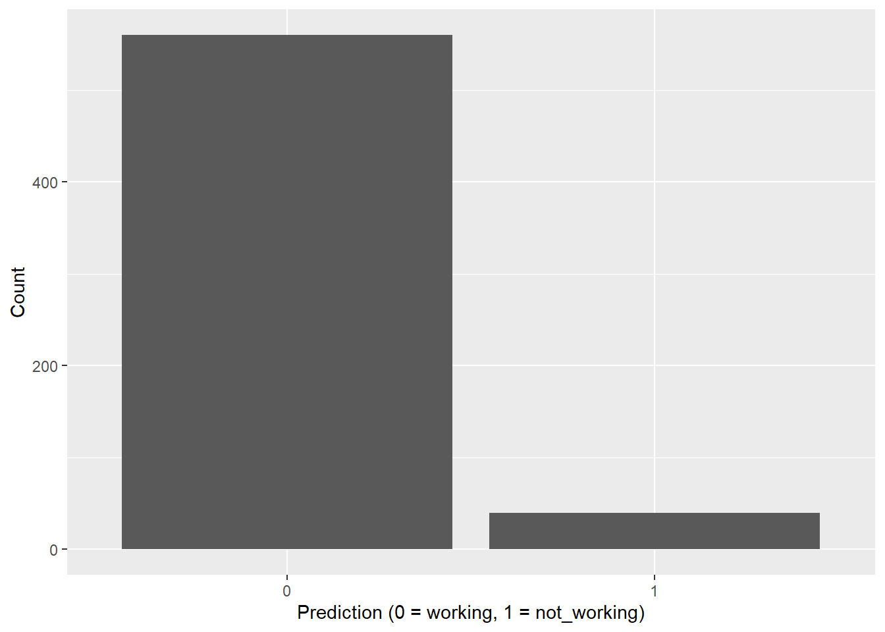

library(arrow)
library(dplyr)
library(ggplot2)
out_dir <- "../stream_out"
ds <- open_dataset(out_dir, format = "parquet")
df <- ds %>%
select(age, sex, drinks, drugs, essay_length, prediction) %>%
collect()
nrow(df)[1] 600This report reads the Parquet output produced by Spark Structured Streaming (stream_out/) and summarizes the live scoring results.
Note: This is a local, file-based streaming source (JSON files dropped into
stream_in/), which is a common pattern for testing and demos.
library(arrow)
library(dplyr)
library(ggplot2)
out_dir <- "../stream_out"
ds <- open_dataset(out_dir, format = "parquet")
df <- ds %>%
select(age, sex, drinks, drugs, essay_length, prediction) %>%
collect()
nrow(df)[1] 600df %>%
summarise(
rows_scored = n(),
pct_predicted_not_working = 100 * mean(as.numeric(prediction), na.rm = TRUE),
avg_age = mean(age, na.rm = TRUE),
avg_essay_length = mean(essay_length, na.rm = TRUE)
)# A tibble: 1 × 4
rows_scored pct_predicted_not_working avg_age avg_essay_length
<int> <dbl> <dbl> <dbl>
1 600 6.67 32.0 2278.ggplot(df, aes(x = factor(prediction))) +
geom_bar() +
labs(x = "Prediction (0 = working, 1 = not_working)", y = "Count")
df %>%
mutate(prediction = factor(prediction)) %>%
count(drinks, prediction) %>%
group_by(drinks) %>%
mutate(pct = 100 * n / sum(n)) %>%
ungroup() %>%
arrange(desc(pct)) %>%
head(20)# A tibble: 11 × 4
drinks prediction n pct
<chr> <fct> <int> <dbl>
1 desperately 0 2 100
2 missing 0 32 100
3 very often 0 6 100
4 often 0 50 96.2
5 socially 0 410 95.3
6 rarely 0 36 85.7
7 not at all 0 24 66.7
8 not at all 1 12 33.3
9 rarely 1 6 14.3
10 socially 1 20 4.65
11 often 1 2 3.85df %>%
mutate(prediction = factor(prediction)) %>%
count(drugs, prediction) %>%
group_by(drugs) %>%
mutate(pct = 100 * n / sum(n)) %>%
ungroup() %>%
arrange(desc(pct)) %>%
head(20)# A tibble: 7 × 4
drugs prediction n pct
<chr> <fct> <int> <dbl>
1 often 0 8 100
2 missing 0 138 97.2
3 never 0 352 92.6
4 sometimes 0 62 88.6
5 sometimes 1 8 11.4
6 never 1 28 7.37
7 missing 1 4 2.82df %>%
select(age, sex, drinks, drugs, essay_length, prediction) %>%
tail(20)# A tibble: 20 × 6
age sex drinks drugs essay_length prediction
<int> <chr> <chr> <chr> <int> <dbl>
1 25 m rarely never 929 0
2 24 m socially never 9 0
3 28 f rarely never 965 0
4 49 m often never 7000 0
5 22 m often often 1433 0
6 21 f often never 1049 1
7 32 f socially never 9 0
8 31 m socially never 9 0
9 31 m often never 2046 0
10 26 f often never 2134 0
11 38 f rarely never 816 0
12 62 m often never 3420 0
13 29 f often never 789 0
14 23 m missing never 9 0
15 22 f often never 575 0
16 24 f missing never 9 0
17 22 m often never 573 0
18 68 m rarely never 64 0
19 57 m rarely never 85 0
20 26 f missing never 9 0